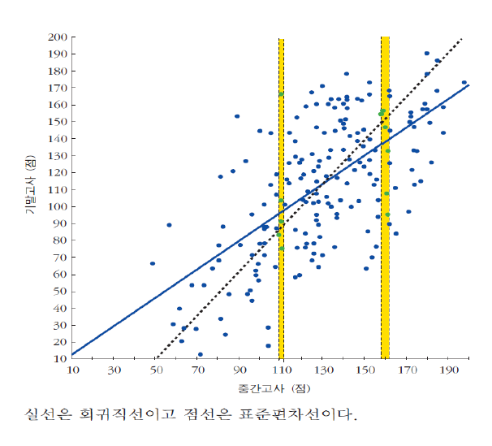

5강에서 뺀 슬라이드
2026-09-29 보관
이 파일은 무엇인가
5강 「회귀분석 (1)」에서 뺀 슬라이드를 버리지 않고 모아 둔 것
- <부록> 회귀계수의 유도 — 2026-09-29 에 뺌 (본편 22쪽). 원본 pptx 에서도 숨김 슬라이드였고, 교수 요청으로 본편에서 내렸다
- 회귀효과 (이전 판) — 2026-09-29 에 뺌 (본편 18쪽). 교수 요청으로 ysyblog.tistory.com/404 를 바탕으로 두 장(「회귀효과」·「회귀효과: 운은 반복되지 않는다」)을 새로 썼다. 교재 산포도(tb-regression-effect-exam.png)와 SDy/SDx 두 식은 여기에만 남는다
- 회귀효과: 운은 반복되지 않는다 — 2026-09-29 에 새로 만들었다가 같은 날 뺌 (본편 21쪽). 관찰된 점수 = 실력 + 확률오차, 정규분포 그림, 회귀오류 예제
→ 배포하지 않는다. course.json 의 강의 목록에도 넣지 않는다.
<부록> 회귀계수의 유도
$\dfrac{\partial \sum e_i^{\,2}}{\partial b_0} = -2\sum (Y_i - b_0 - b_1 X_i) \;\; = 0$
$\dfrac{\partial \sum e_i^{\,2}}{\partial b_1} = -2\sum (Y_i - b_0 - b_1 X_i)X_i \;\; = 0$
$$b_0 = \bar{Y} - b_1 \bar{X}$$
$$b_1 = \frac{\sum(X_i - \bar{X})(Y_i - \bar{Y})}{\sum(X_i - \bar{X})^2}$$
회귀효과
평범(평균)으로의 회귀(regression to mediocrity (mean)): 결국엔 평균으로 모인다.
극단적인 값 = 실력 + 운 → 운은 확률적이라 다음번에 나타나지 않을 가능성이 높음 → 평균 쪽으로 당겨짐

직선 위의 점들은 평균에서 x가 1*X표준편차 떨어져 있을 경우, y도 1*Y표준편차 떨어져 있음
실제 회귀직선은 평균에서 x가 1*X표준편차 떨어져 있을 경우, y는 r*1*Y표준편차 떨어져 있음
상관계수는 $-1 \le r \le +1$ 이므로
- 중간고사에서 평균보다 높았던 학생은 기말고사에서 그만큼 높지 않아 평균 쪽으로 당겨지고,
- 중간고사에서 평균보다 낮았던 학생도 기말고사에서 그만큼 낮지 않아 평균 쪽으로 당겨진다
회귀효과: 운은 반복되지 않는다
관찰된 점수 = 실제 실력 + 확률오차
예) 실제 실력은 평균 120·표준편차 15 인 정규분포,
확률오차는 각각 1/2 확률로 +5 또는 −5
관찰된 점수 140점은 두 경우 가운데 하나
- 실제 실력 135 + 확률오차 +5
- 실제 실력 145 + 확률오차 −5
→ 실력 135인 사람이 더 많아 앞의 경우가 더 흔함
→ 첫 시험 점수가 평균보다 높으면,
실제 실력은 관찰된 점수보다 낮을 가능성이 큼
회귀오류(regression fallacy): 회귀효과를 무언가 중요한 효과로 착각하는 것
예) 두 시험 평균 50·표준편차 10·상관계수 0.5 인 강의에서 중간고사 30점 학생에게 특별수업 → 기말고사 평균 40점